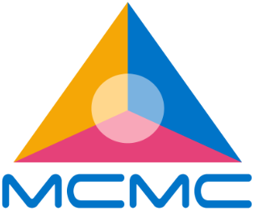
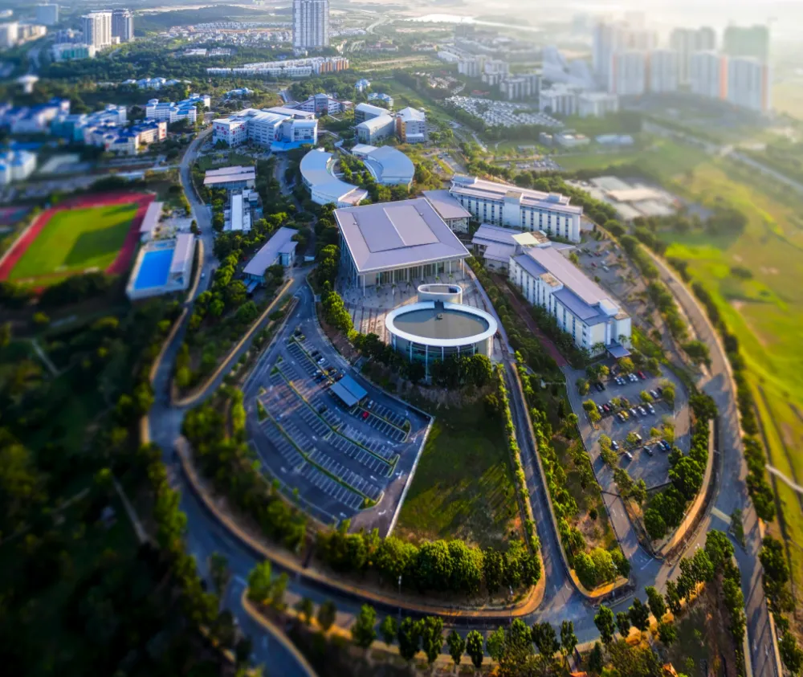

GAIA
Generative AI for Advanced Innovation
A flagship AI laboratory providing hands-on experience in machine learning, deep learning, natural language processing (NLP), machine vision, cloud computing, and embedded AI systems.
MMU Cyberjaya
MCMC × MMU Strategic Collaboration
Established through a strategic collaboration between the Malaysian Communications and Multimedia Commission (MCMC) and Multimedia University (MMU), the Artificial Intelligence Transformation Centre (AIX) accelerates AI innovation, capability development, and ecosystem growth in Malaysia.


Who We Are
Accelerating AI eXcellence
The Artificial Intelligence Transformation Centre (AIX) is a national collaborative initiative dedicated to advancing artificial intelligence innovation and adoption across Malaysia.
Located at MMU's Cyberjaya and Melaka campuses, AIX houses 13 specialised laboratories equipped with advanced technologies and digital infrastructure that support research, experimentation, solution development, industry collaboration, and talent development.
By bringing together government agencies, academia, industry leaders, researchers, startups, and innovators, AIX creates an ecosystem where ideas are transformed into practical AI solutions that address real-world challenges.
Whether developing next-generation technologies, validating AI applications, or nurturing future AI talent, AIX serves as a catalyst for Malaysia's digital economy.
The AIX Advantage
At AIX, we bridge research, industry, and innovation through a collaborative ecosystem designed to accelerate AI adoption.
Develop cutting-edge AI technologies and intelligent solutions.
Partner with businesses to solve real-world challenges through AI.
Equip students and professionals with future-ready AI skills.
Test, prototype and commercialise innovative AI solutions.
Support organisations in adopting AI to improve productivity and competitiveness.
Contribute towards Malaysia's AI ecosystem and digital transformation agenda.
Our Facilities
13 Specialised Laboratories
AIX comprises thirteen specialised laboratories, each focusing on strategic areas of artificial intelligence and emerging technologies.
10 labs at MMU Cyberjaya 3 labs at MMU Melaka
Collaboration Ecosystem
AIX welcomes collaboration from organisations seeking to harness the power of artificial intelligence.
Supporting national digital initiatives and AI policies.
Co-develop AI solutions and drive digital transformation.
Advance multidisciplinary research and knowledge exchange.
Access cutting-edge facilities and collaborative research opportunities.
Prototype, validate and commercialise AI technologies.
Governance
AIX is jointly governed by MCMC and MMU, ensuring strategic direction, operational excellence, and long-term sustainability.
The Centre is led by an experienced project management team and supported by domain experts across Engineering, Information Technology, Creative Multimedia, and Management, enabling multidisciplinary collaboration and innovation.
Project Steering Committee (PSC)
Chairmen
Committee Members
Led by MMU academics — a Lead Professor supported by domain experts overseeing the laboratory clusters across Engineering, Information Technology, Creative Multimedia, and Management.
Project Manager /
Lead Professor
Domain ExpertAI & Engineering (3 Labs)
Domain ExpertIT (6 Labs)
Domain ExpertCreative Multimedia (2 Labs)
Domain ExpertManagement (2 Labs)
Partnerships
Whether you're looking to explore AI opportunities, develop innovative solutions, conduct collaborative research, or upskill your workforce, AIX provides the expertise, facilities, and ecosystem to help you succeed.
We welcome collaboration with:
Register Your Interest
Artificial intelligence is transforming every industry. At AIX, we believe collaboration is the key to unlocking its full potential.
Join us in shaping innovative AI solutions, developing future talent, and advancing Malaysia's digital transformation journey.
Register your interest today to collaborate with AIX.
Scan here and fill out the form. We will get back to you as soon as possible!
Collaborate with UsAIX Industry Partner Onboarding Form